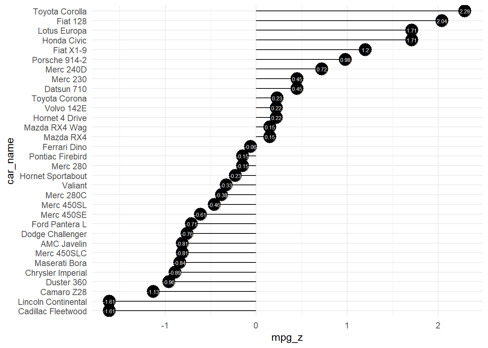

diverging_lollipop_plt(
.data,
.x_axis,
.y_axis,
.plot_title = NULL,
.plot_subtitle = NULL,
.plot_caption = NULL,
.interactive = FALSE
)Introduction
A diverging lollipop chart is a useful tool for comparing data that falls into two categories, usually indicated by different colors. This type of chart is particularly well-suited for comparing the differences between two data sets and for identifying which data points are contributing most to the differences.
The R package {healthyR} offers a function called diverging_lollipop_plt() that can be used to create a diverging lollipop chart. This function has several parameters that can be used to customize the chart to meet your specific needs.
In conclusion, the diverging lollipop chart is a useful tool for comparing data sets and can provide insights into the differences between two sets of data. The diverging_lollipop_plt() function from the {healthyR} package is a great option for creating this type of chart, as it offers a range of customization options to meet your specific needs. Whether you’re working with data related to business, finance, or any other field, a diverging lollipop chart can be a valuable tool in your visual analysis toolkit.
Function
Let’s take a look at the full function call.
Now lets see the arguments that get provided to the parameters.
.data- The data to pass to the function, must be a tibble/data.frame..x_axis- The data that is passed to the x-axis. This will also be the x and xend parameters of the geom_segment.y_axis- The data that is passed to the y-axis. This will also equal the parameters ofyendandlabel.plot_title- Default is NULL.plot_subtitle- Default is NULL.plot_caption- Default is NULL.interactive- Default is FALSE. TRUE returns a plotly plot
Example
Let’s see an example.
library(healthyR)
suppressPackageStartupMessages(library(ggplot2))
data("mtcars")
mtcars$car_name <- rownames(mtcars)
mtcars$mpg_z <- round((mtcars$mpg - mean(mtcars$mpg))/sd(mtcars$mpg), 2)
mtcars$mpg_type <- ifelse(mtcars$mpg_z < 0, "below", "above")
mtcars <- mtcars[order(mtcars$mpg_z), ] # sort
mtcars$car_name <- factor(mtcars$car_name, levels = mtcars$car_name)
diverging_lollipop_plt(
.data = mtcars,
.x_axis = car_name,
.y_axis = mpg_z
)
Now let’s also see the interactive chart.
diverging_lollipop_plt(
.data = mtcars,
.x_axis = car_name,
.y_axis = mpg_z,
.interactive = TRUE
)Voila!